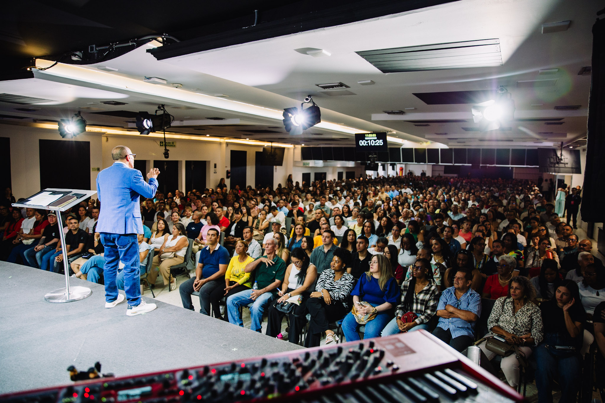

Estudio & Vida
Estudio & Vida
Conversaciones de Fe
Entrevistas y debates profundos sobre teología práctica, dudas y testimonios de transformación.

Una conversación sincera sobre cómo mantenernos firmes en las promesas de Dios cuando las circunstancias cambian, junto a invitados especiales de nuestra casa pastoral.
Explora las series temáticas producidas para acompañar tu día a día.
Estudio & Vida
Entrevistas y debates profundos sobre teología práctica, dudas y testimonios de transformación.
 Prédicas Dominicales
Prédicas Dominicales
Las enseñanzas completas de cada domingo en audio de alta fidelidad para escuchar donde estés.
 Juventud JNI
Juventud JNI
Charlas sin filtro sobre universidad, relaciones, salud mental y propósito para jóvenes.

Familia & ParejasHerramientas y principios bíblicos para fortalecer tu matrimonio y criar hijos en fe.
Toca cualquier episodio para escucharlo al instante.
Cómo un corazón humilde derriba gigantes y abre puertas de bendición para tu vida.
Cómo tomar decisiones con firmeza en la universidad y el trabajo sin perder tu identidad.
Principios para resolver desacuerdos y mantener un ambiente lleno de gracia en casa.
Selecciona un episodio
Nazareno Podcast Network